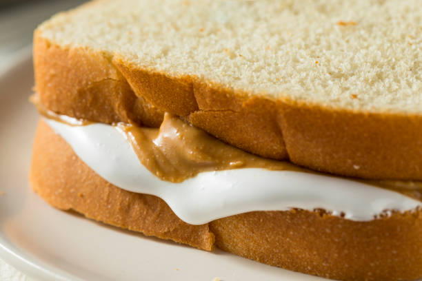

Peanut Butter and Mayonnaise Sandwich
Enjoy this sandwich as a quick and easy lunch or snack. The combination of flavors might surprise you!
Ingredients:
- 2 slices of bread (white, wheat, or your preferred type)
- 2 tablespoons of peanut butter (smooth or chunky)
- 1 tablespoon of mayonnaise
- Optional add-ins:
- Thinly sliced banana
- Thinly sliced apple
- Thinly sliced cucumber
- Lettuce
- Bacon
- Honey
Instructions:
- Lay out the two slices of bread on a clean surface or plate.
- Spread 1 tablespoon of peanut butter on one slice of bread, making sure to cover the entire surface.
- Spread 1 tablespoon of mayonnaise on the other slice of bread, covering the entire surface.
- If desired, add any optional add-ins to enhance the flavor and texture of your sandwich. You can choose from thinly sliced fruits or vegetables, lettuce, bacon, or a drizzle of honey.
- Place the two slices of bread together, with the peanut butter and mayonnaise sides facing each other.
- Press down gently to help the sandwich stick together.
- If desired, you can toast the sandwich in a sandwich press, on a stovetop grill, or in a pan over low heat for a few minutes on each side, until the bread is golden brown and crispy.
- Cut the sandwich into halves or quarters and serve.